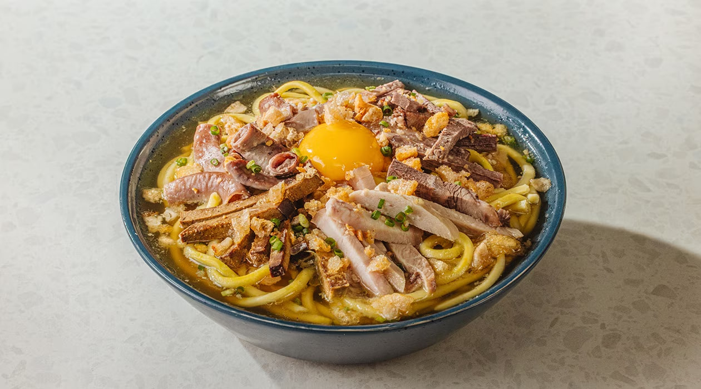

Western Visayas
La Paz Batchoy
La Paz Batchoy is an iconic Filipino noodle soup that originated in the district of La Paz in Iloilo City. It is a hearty, deeply flavorful dish consisting of fresh miki (egg noodles) submerged in a slow-cooked pork and beef broth, which is traditionally seasoned with guinamos (local shrimp paste). The soup is generously topped with crushed chicharon (pork cracklings), fried garlic, chopped spring onions, and a mix of pork offal (liver, intestines) and beef loin. It is often served with a raw egg cracked on top just before serving.

Gather
Ingredients
- Fresh miki noodles (egg noodles)
- Pork bones and beef marrow bones (for broth)
- Pork belly and pork liver
- Pork intestines (cleaned thoroughly), optional
- Guinamos (shrimp paste) or regular bagoong
- Brown sugar, salt, and pepper
- Crushed chicharon (pork cracklings)
- Toasted garlic bits
- Spring onions, chopped
- Raw egg (optional, for topping)
Make it
Recipe
- In a large pot, boil the pork and beef bones with water for 3 to 4 hours to extract the flavors. Skim the scum periodically.
- Add the pork belly and intestines to the pot and cook until tender. Remove the meat once tender, slice them thinly, and set aside.
- Season the simmering broth with guinamos, brown sugar, salt, and heavily with black pepper. Let it simmer further.
- Briefly blanch the sliced pork liver in the hot broth so it doesn't overcook, then remove and set aside.
- Blanch the fresh miki noodles in boiling water for a few seconds, then place them into individual serving bowls.
- Arrange the sliced pork, liver, and intestines on top of the noodles.
- Pour the boiling hot broth over the noodles and meat.
- Garnish heavily with crushed chicharon, toasted garlic, and spring onions. Crack a raw egg on top immediately before serving.